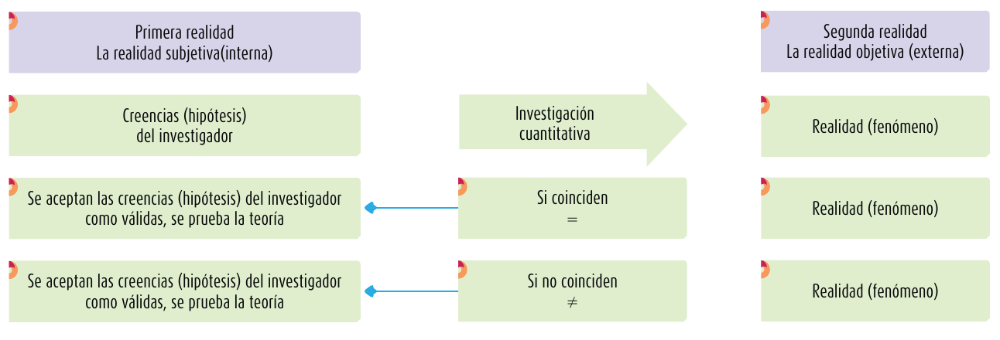

Talle de Investigación: Levantamiento de Información
Características de los Enfoques de Investigación
Enfoque Cuantitativo vs Enfoque Cualitativo
Enfoque cuantitativo
En el enfoque cuantitativo es importante tomar en consideración que se deben seguir todos los pasos, respetando el orden establecido (no es factible saltar a otro pasos). En este tipo de enfoque partimos de una idea que deberá acotarse, y una vez conseguido esto, surgirán los objetivos y preguntas de investigación. En base a las preguntas estableceremos la hipótesis y determinaremos las variables; se traza un plan para probar las variables; se miden las variables en un contexto dado; se analizan las mediciones obtenidas usando métodos estadísticos y se extraen las conclusiones con respecto a una o más hipótesis.
Proceso cuantitativo
Hernández Sampieri, Fernández Collado y Baptista Lucio (2014) [4]. Esquema que indica las etapas del proceso cuantitativo
De acuerdo a lo que señalan Hernández Sampieri, Fernández Collado y Baptista Lucio (2014) [4], a continuación se anotan algunas de las características más importantes del enfoque cuantitativo:
Se presenta la necesidad de medir y estimar magnitudes de los problemas de investigación: ¿cada cuánto ocurren y con qué magnitud?
El investigador plantea un problema de estudio delimitado y concreto sobre el fenómeno. Sus preguntas de investigación se centran en aspectos puntuales.
Con el problema de estudio planteado, el investigador realiza una revisión de la literatura (estado del arte) y construye un marco teórico (la teoría que habrá de guiar su estudio), del cual deriva una o varias hipótesis (cuestiones que va a examinar si son ciertas o no) y las somete a prueba mediante el empleo de los diseños de investigación apropiados.
Las hipótesis se generan antes de recolectar y analizar los datos.
La recolección de los datos debe emplear procedimientos estandarizados y se sustenta en la medición las variables relacionadas con la hipótesis.
Los datos se representan con cantidades (números) y para analizarlos se deben emplear métodos estadísticos.
Durante el proceso se buscará llevar a cabo experimentación que permita encontrar otras posibles explicaciones distintas a la propuesta de estudio o hipótesis.
La investigación de corte cuantitativo debe ser objetiva, es decir, el investigador no debe incidir en el fenómeno que está observando
En la investigación cuantitativa se busca poder deducir generalizaciones a partir de descubrimientos realizados en grupos o muestras de una población.
A fin de llevar a la práctica lo expuesto anteriormente, se empleará el esquema propuesto a continuación:
Relación entre la teoría, la investigación y la realidad del enfoque cuantitativo

Hernández Sampieri, Fernández Collado y Baptista Lucio (2014) [4].
Enfoque cualitativo
A diferencia del enfoque cuantitativo, en este tipo de estudio las preguntas e hipótesis se pueden desarrollar en cualquier instante (antes, durante o después de la recolección y análisis de datos). Con esta lógica, las actividades que se realizan en en el enfoque cualitativo permiten descubrir las preguntas de investigación más importantes, y posteriormente, mejorarlas y encontrar respuestas a las mismas.
Proceso cualitativo
Hernández Sampieri, Fernández Collado y Baptista Lucio (2014) [4]. Esquema que indica las etapas del proceso cualitativo
Como se puede apreciar en la ilustración anterior, en este enfoque la lógica que se sigue para ejecutar las actividades es de carácter circular. Con el objetivo de entender el proceso que se sigue, debemos tomar en consideración lo siguiente (Hernández Sampieri, Fernández Collado y Baptista Lucio, 2014) [4]:
Si bien es cierto que inicialmente se hace una revisión de la literatura (estado del arte), ésta puede complementarse en cualquier etapa del proceso.
En la investigación cualitativa es factible regresar a etapas previas (por ello, varios conectores tienen flechas en los dos sentidos). Por ejemplo, en determinados estudios se puede plantear realizar una observación de campo, pero luego se puede determinar que no es factible a diversos aspectos. Por ello, se retorna a la etapa anterior, se replantea y se continúa.
La inmersión inicial en el campo especifica que es necesario familiarizarse y sensibilizarse con el entorno donde se realizará el estudio, identificando a los informantes "clave" que aportarán con datos y guiarán al investigador. De igual forma, es necesario verificar la factibilidad del estudio.
En este tipo de estudio la muestra, la recolección y el análisis de datos son fases que se realizan prácticamente de forma simultáneamente.
Algunas de las características más importantes de este tipo de estudio, de acuerdo a lo que señalan Hernández Sampieri, Fernández Collado y Baptista Lucio (2014) [4] son las que se anotan a continuación:
El investigador plantea el problema, sin embargo, no se sigue un proceso claramente definido y las preguntas de investigación no siempre se han conceptualizado ni establecido por completo.
El estudio cualitativo se basa en una lógica y proceso inductivo, donde se busca explorar y describir, para luego generar perspectivas teóricas. Por ejemplo, en un estudio de este tipo el investigador entrevista a una persona, analiza los datos que obtuvo, y extrae conclusiones. Luego de ello, repite el proceso con otras personas, analizando caso a caso y dato a dato, hasta lograr una perspectiva más general.
En la mayoría de estudios de este tipo no se prueban hipótesis, sino más bien surgen durante el proceso y se perfeccionan a medida que se logran recabar más datos.
La recolección de datos no se realiza empleando esquemas estandarizados ni predeterminados de forma completa, más bien se busca conocer perspectivas y puntos de vista de los participantes (aspectos subjetivos como sus emociones, sus prioridades, significados, etc.). Esta información se recaba a través de preguntas abiertas, y se recogen los datos a través de expresiones escritas, visuales, verbales y no verbales.
Las técnicas más empleadas son las siguientes: observación no estructurada, entrevistas abiertas, revisión de documentos, discusión en grupo, evaluación de experiencias personales, registro de historias de vida, interacción e introspección con grupos o comunidades.
Se busca "reconstruir" la realidad que se define a través de las interpretaciones de los participantes en la investigación (respecto a sus propias realidades).